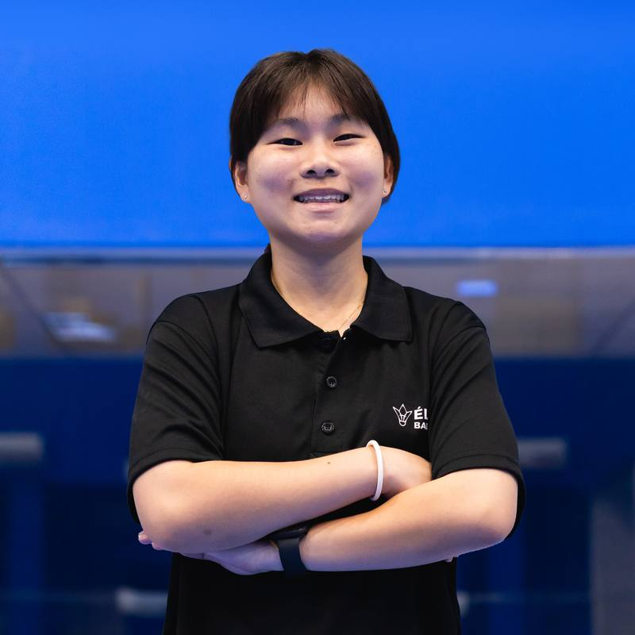

About Grace
Grace is a Development Coach at Élever Badminton, drawing on over 13 years of competitive experience including her time in the National Intermediate Squad.
Having first picked up a racket in Primary 3, Grace rose through the ranks to the National Intermediate Squad, earning podium finishes throughout her school years. A true all-rounder, she has claimed local podium finishes across women’s singles, women’s doubles, and mixed doubles, and finished among the Top 8 at the Asian University Badminton Championship - a testament to her versatility across every discipline of the game.
Now in her third year of coaching, Grace specialises in introducing children to badminton - shaping every beginner’s very first experience of the sport. Known for her carefree, approachable, and fun-loving nature, she brings something no amount of tenure can teach: she remembers exactly what it feels like to be a young beginner herself. To her students, Grace is less of a coach and more of a friend - someone they trust, listen to, and genuinely enjoy learning from.
Deeply aligned with Élever Badminton’s mission of holistic development, Grace is dedicated to helping every child fall in love with the sport from their very first lesson - and grow in confidence both on and off the court.
Achievements
- Former National Intermediate Squad player
- Local podium finisher across women’s singles, women’s doubles, and mixed doubles
- Top 8 at the Asian University Badminton Championship
On court
to
assets/img/coaches/grace-tan/